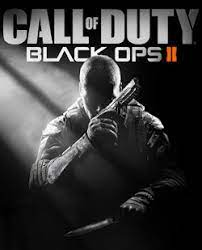

The game's campaign follows up the story of Black Ops and is set in the late 1980s and 2025. In the 1980s, the player switches control between Alex Mason and Frank Woods, two of the protagonists from Black Ops, while in 2025, the player assumes control of Mason's son, David (codenamed "Section").
